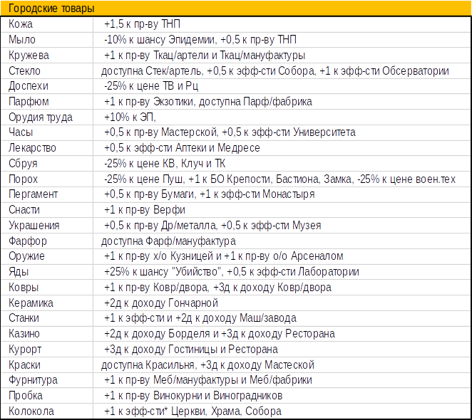

Торговля – это система экономических отношений между странами, при помощи которых можно продавать излишки производимых товаров и покупать дефицитные товары.
В игре симулирован общий рынок — автоматическая продажа излишков товаров и их покупка при дефиците. С начала игры доступ к общему рынку имеют все страны, за исключением стран Аскариды и Океана.
Прямые тм — это торговые сделки непосредственно между двумя странами. Прямые тм ограничены по количеству, доступному игрокам и по дальности, на которую такую торговлю можно вести. Прямые тм дают обеим сторонам денежный доход.
С изучением технологий и по глобальным событиям и число и дальность тм возрастают.
Непроданные страной излишки товара поступают на ее склад. Товар накапливается на складе и может быть использован со склада при возникновении потребности в нём.
На складе не может одновременно храниться более 10-ти ед. товара.
Товары продаются на общем рынке исходя из базовой цены на них. Кроме того, возможны колебания цен на товары вследствие складывающейся ситуации предложения и спроса. Также на цену товара может оказывать тот факт, что данный товар не производится в соответствующей стране.
Цены на товары указаны в балансе. Страна может иметь особое отклонение от цены товара в результате выполнения миссии или случайных событий.
Полное удовлетворение спроса на отдельные товары (обычно при наличии спроса на них) дает определенные бонусы стране. Это так называемые товарные модификаторы. Эффекты товарных модификаторов указаны в балансах.
При достижении городом 5-го размера, в нём начинает производиться определенный «городской товар», дающий различные бонусы:
Культурные группы отличаются друг от друга набором возможно доступных городских товаров. Городской товар не изменяем (за исключением выполнения соответствующих миссий).
Эффективность торговли (т.е. получение более высокого дохода от продажи собственного товара) зависит от изученных технологий, принятых нац.идей, наличия торговых построек в государстве и их числа, выполненных заданий (миссий).
Игрок может вводить заградительные пошлины, уменьшающие закуп товаров с общего рынка. Пошлины могут быть 4-х уровней (от 0 до 3), при этом 0 — отсутствие пошлин, 3 — уменьшение притока товаров на 75%. Пошлинами облагается импорт. Уровень пошлин снижает торговую эффективность страны (каждый уровень на 5% ТЭ).
Эмбарго – решение страны запретить вести определенным странам с ней торговлю.